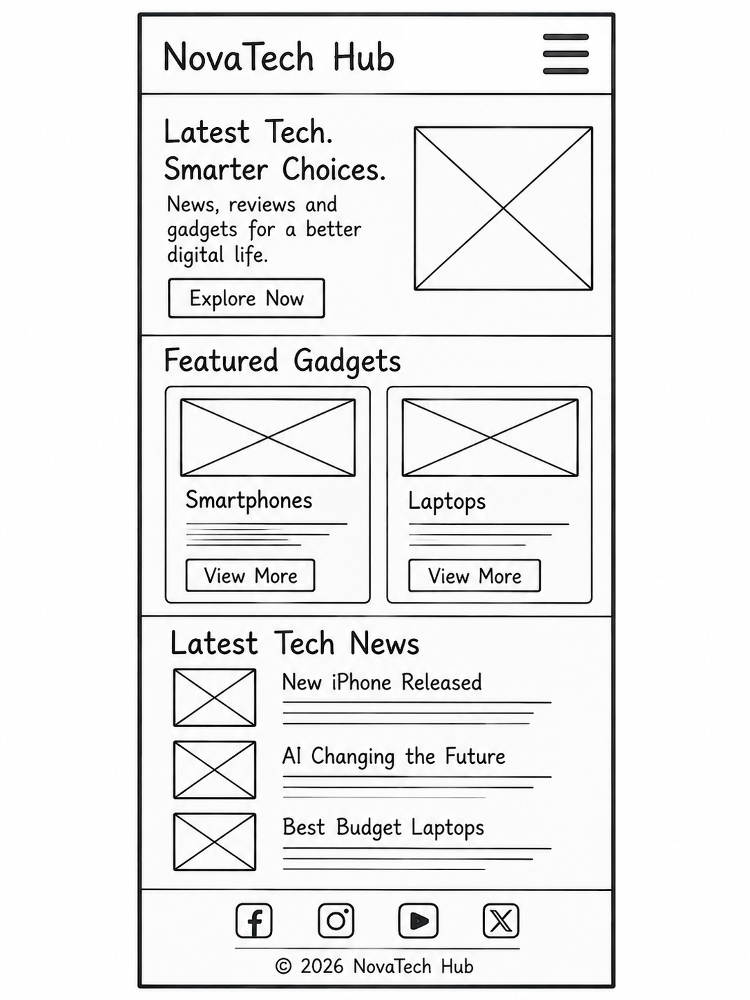
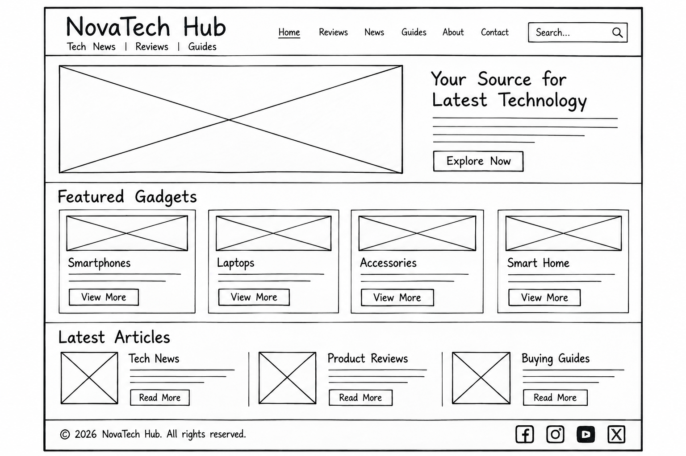

Site Name
NovaTech Hub was chosen because “Nova” suggests new ideas and innovation, “Tech” identifies the subject, and “Hub” describes a central place to explore technology.
Proposed domain: novatechhub.com (availability not checked).
Site Purpose
NovaTech Hub helps students and everyday technology users understand gadgets and digital trends. It will feature beginner-friendly gadget guides, product comparisons, short technology updates, and a contact form for questions.
Visitor Scenarios
- Which affordable laptop would be suitable for a university student?
- How can I compare smartphones before choosing one?
- Where can I read simple explanations of new technology trends?
- How do I contact NovaTech Hub with a question?
Color Scheme
These colors are used throughout this site plan and will guide the finished website.
Typography
Poppins — page title, headings, and navigation labels.
Roboto — paragraphs, lists, form labels, and general body text.
Homepage Wireframes
Draw black-and-white sketches of the homepage for both screen sizes, photograph or scan them, and replace the placeholders below with your own images. The wireframes should focus on layout rather than colors.
Mobile View

Desktop View
